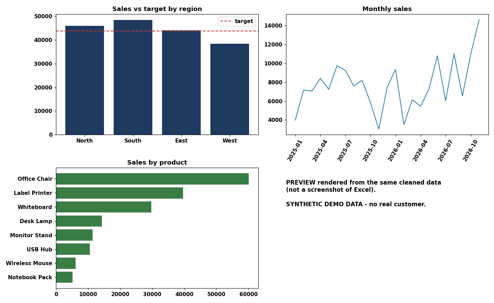
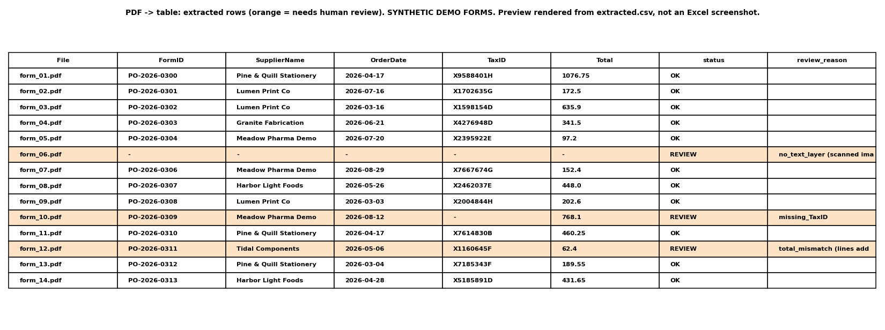
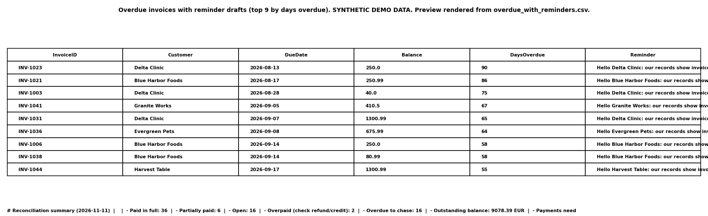

39–79 €precio orientativo
Excel limpio y dashboard
Organizo listados, elimino duplicados identificados y entrego Excel con controles y panel.
Ficheros del cliente y columnas deseadas; confirmar 1 muestra antes del presupuesto.
Limpieza de Excel, conversión de PDF y conciliación de facturas. Entregas pequeñas y comprobables, con revisión de excepciones y presupuesto antes de empezar.

Organizo listados, elimino duplicados identificados y entrego Excel con controles y panel.
Ficheros del cliente y columnas deseadas; confirmar 1 muestra antes del presupuesto.

Paso documentos legibles a CSV o Excel, recalculo totales y marco las excepciones sin inventar datos.
PDFs con capa de texto; escaneos o manuscritos requieren evaluación adicional.

Relaciono facturas y movimientos, separo pagos parciales y preparo las discrepancias para revisar.
Exportaciones de facturación y banco autorizadas, tratados localmente.
Describe el problema, número aproximado de archivos y entrega deseada. No envíes información sensible hasta acordar un canal seguro.
Solicitar presupuesto directo Ver perfil en FiverrRespuesta y aceptación manuales. En Fiverr las conversaciones y los pagos se realizan exclusivamente dentro de Fiverr.